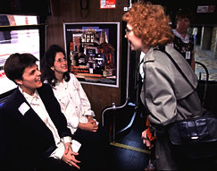

Press Conference: Inside the Bus with Janet Rosfeld

Artists Carolyn Speranza [left] and Lisa Link
sit inside the bus with the announcement
poster behind the bus driver's seat. They are talking with Janet Rosfeld
of Beechview whose mother, Ruth, is featured in the "Local
Heroes" billboard.